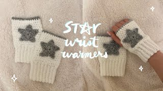

Star Wrist Warmers
üßµ Materials:
- Weight 4 (medium ) yarn in 2 colors
- 4.0 mm crochet hook
- Darning needle
- Scissors
Abbreviations:
- ch - chain
- sl st - slip stitch
- sc - single crochet
- hdc - half double crochet
- dc - double crochet
- tc - treble crochet
- blo hdc - back loop only half double crochet
Instructions:
Start with your 4 mm hook and your main color yarn.
Bottom Ribbing
Ch 12
Sc into the second loop from your hook, continue sc until the end of the row
Ch 1, blo hdc into each stitch for the entire row
Repeat the previous step until the panel fits snug around your wrist
Connect ends of the panel together with an additional sc row (refer to the video if needed)
Main Body
Round 1:
Ch 2, hdc across the top of the ribbing
Sl st into first stitch of the row
Round 2:
Ch 2, hdc across row
Sl st into first stitch of the row
Rounds 3–5:
Repeat Round 2
Round 6:
Sl st into the next stitch adjacent to your hook
Hdc until there is one stitch left — do not crochet into the last stitch
Round 7:
Ch 2, turn your work, hdc across row
Rounds 8–9:
Repeat Round 7
On Round 9, sl st into the first stitch of the row to close the gap
Round 10:
Ch 2, hdc across row
Sl st into first stitch of row
Fasten off
Round 11:
Take your accent color yarn and attach it to the top of the work with a sl st
Sc 1 row, sl st into the first stitch
Fasten off
Flip your work inside out
Star Applique
Use your 3 mm hook and accent color yarn.
Create a magic circle and ch 3
14 dc into the magic circle, pull tail to cinch circle
Ch 5, sc into 2nd loop from hook, hdc, dc, tc, sl st into the 3rd stitch from your chain
Repeat the previous step 4 more times to create 5 points
Fasten off
Assembly
Use a darning needle and your accent color yarn to stitch the star onto the top of your wrist warmer
(refer to the video for placement)
Repeat the process to create your second wrist warmer.